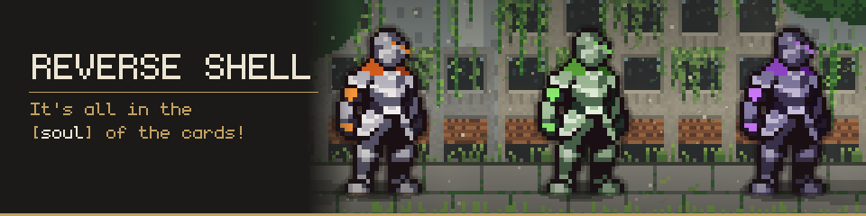
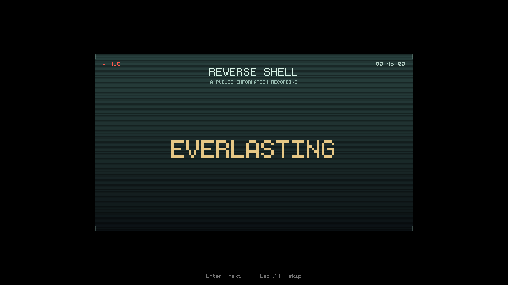
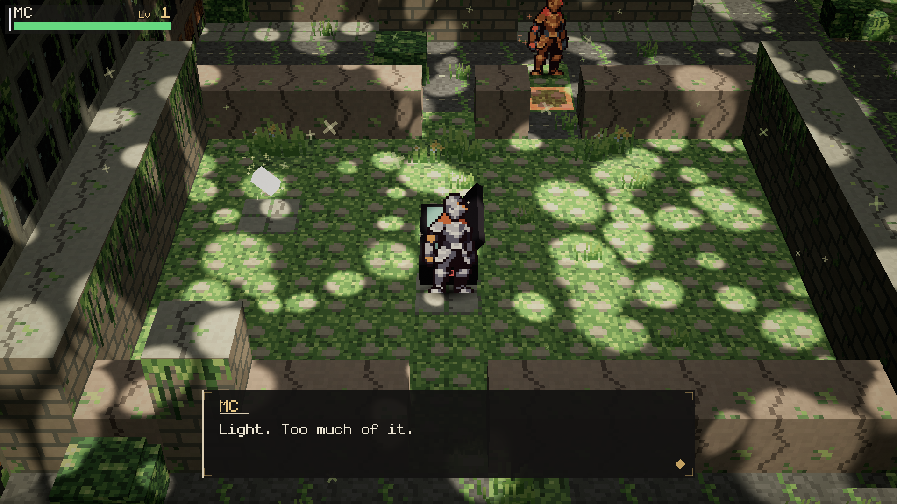
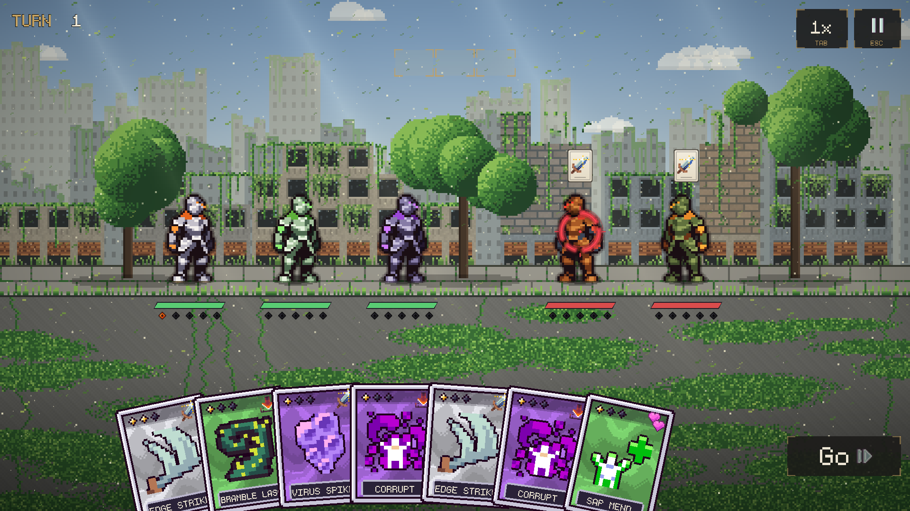
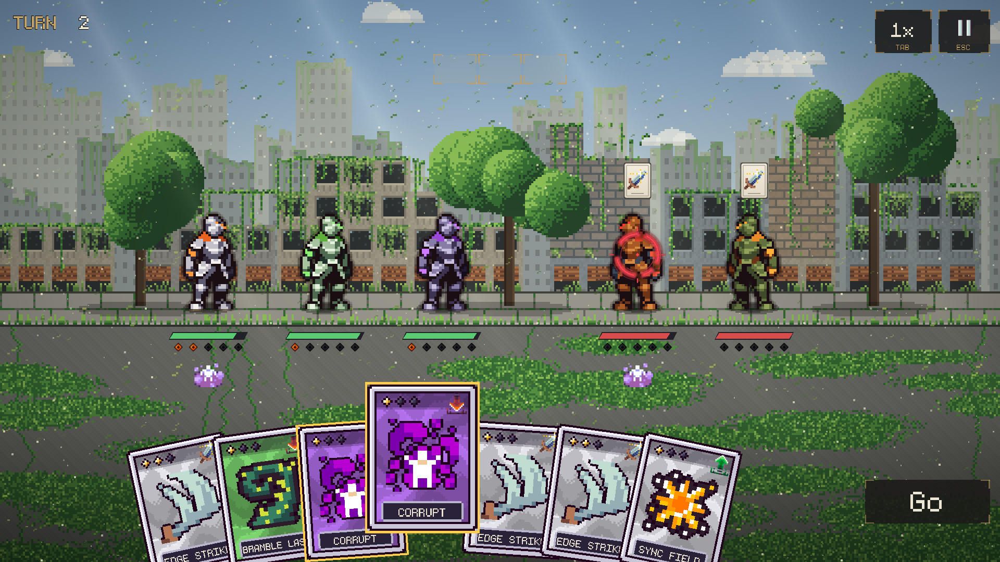
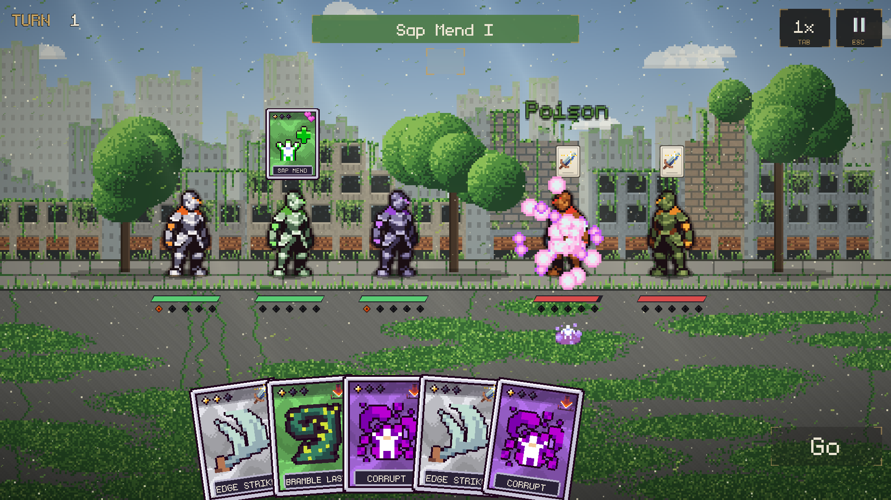
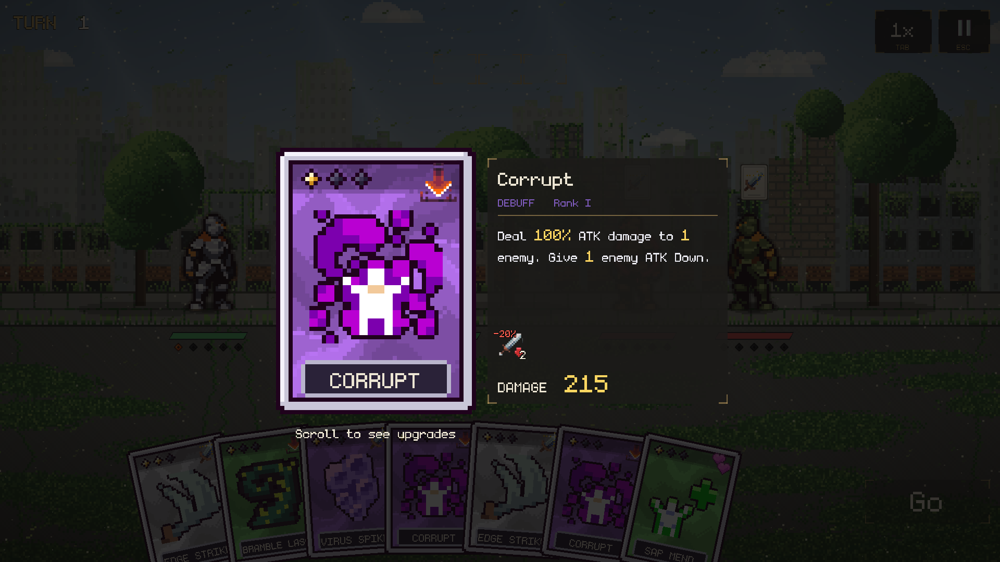

How to use: press the button, then paste into itch's Description field (Ctrl+V). The text, headings,
lists and controls table keep their formatting. Each picture becomes a line like
[insert image: helper-images/combat-card-merge.png]: click that line in itch's editor, use its
image button to upload that file, then delete the line. The banner and the screenshot column only preview
the page; upload those through itch's own fields.

Sunlight through a broken roof. Wind in the grass that grew over the road. Somewhere in the green, a machine is still keeping watch.
Reverse Shell is a narrative RPG with tactical card combat, set in a beautiful world humanity left behind.
Long ago, people found a way to live forever. Reverse Shell recorded a mind onto a Soul Card and placed it in a mechanical body built to outlast anything. Live once. Live on.

Now the cities are overgrown, and you wake alone beside a cracked capsule. You're a machine with a human's name that you can barely remember. Explore the ruins, meet the machines that outlived their makers, and face the guardian at the heart of Mossline.

This is a free demo of Chapter One, playable in your browser.
Every card is a decision

Plan, then press Go. Each fighter standing gives you 1 AP. Every card costs 1 AP and waits in the queue, and you can take the whole turn back before you commit.
Merge cards. Drag a card next to a matching one and they fuse into a stronger rank.
Charge your Ultimate. Cards build Ult pips. Spend them at the right moment.
Read the field. Hold any card or unit to see its numbers, statuses and upgrades. Play to the resonance chart: Electric, Fire, Toxin and Earth each beat the next, and Light and Void beat each other.



In the demo
Chapter One: The Overgrown City. Wake up alone, piece together records and memory fragments, follow a scanner trace through the ruins, face the Collector, and find what the guardian is protecting.
Sandbox Mode (title screen, or Esc → Settings): practice fights at any enemy level with the whole test crew, including Heal Bot, who keeps everyone running, and Lucy, who infects things.
A pause menu dealt out as real cards, three save slots, and Fast or Pretty graphics.
Controls
Click the game once
gives it keyboard focus
WASD / arrows
walk (hold Shift to run)
F
talk, open, interact
Q
scan (once you have the scanner)
Esc or P
menu (in browser fullscreen, Esc leaves fullscreen, so use P)
Click a card
play it (1 AP)
Drag a card
move it, or merge it (1 AP)
Hold a card or unit
read it
Go / Enter
play the turn
Tab
battle speed
The full list is in Settings → Tutorials.
Tips for the browser
Saves are kept in your browser, so a reload keeps them. Clearing site data or using a private window loses them.
Graphics start on Fast, which runs best in a browser. Switch to Pretty in Settings for the full look.
Chrome or Firefox on a desktop or laptop is best. Phones aren't supported.
Feedback
This is an early demo and the numbers are first drafts. Bugs, balance and "this confused me" are all welcome in the comments below. Please mention the version on the title screen (e.g. Demo v0.2).
Credits
Made by Oliver Pearce. A free, non-commercial fan game inspired by Reverse: 1999 (not affiliated with Bluepoch).
Icons: Raven Fantasy Icons by Clockwork Raven Studios
Character sprites: Fantasy Knight by aamatniekss
Effects: Super Pixel Effects Gigapack by Will Tice / unTied Games